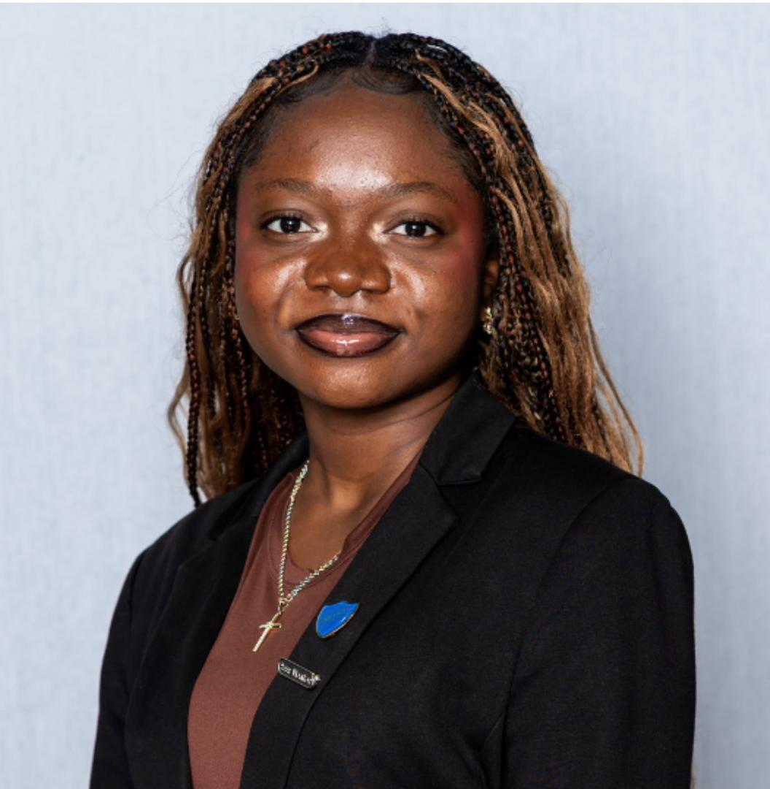
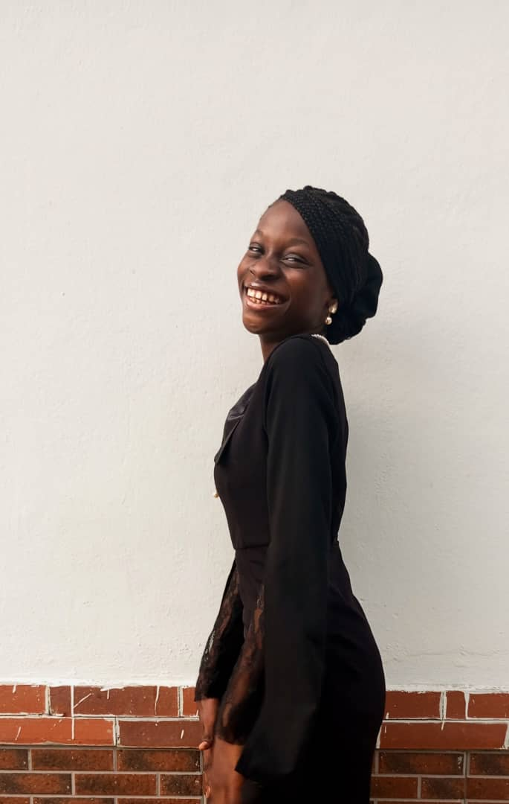

.png)
About Ànúrà
Bridging the gap between women and STEM by providing young girls with access to quality STEAM education.
What We Do
Founded in 2023, Ànúrà is dedicated to creating a safe space for girls aged 13-18 to explore their passions in Science, Technology, Engineering, Art, and Mathematics (STEAM).
Through hands-on programs, mentorship, and a supportive community, we help girls see themselves as builders, creators, and problem-solvers. We focus on making STEAM learning feel real, relevant, and achievable.
Our Work
2024 Summer Program
In our inaugural run, we reached over 20 young girls, partnering with Slum2School to ensure girls from disadvantaged areas had the logistics covered to attend.With additional backing from The Bloom Africa and Bloom in STEM, 18 participants successfully built technological solutions to real-world problems.Team Ruby took home the grand prize of N50,000 for their innovative project.
2025 Summer Program
Following the success of our inaugural program, Ànúrà hosted its 2025 Summer Program to further empower young girls in STEAM through hands-on learning, collaboration, and creativity. Participants explored Technology, Science, Engineering, Mathematics, and Arts through interactive sessions led by passionate instructors and mentors. The program created a safe and inspiring environment for girls to build confidence, develop practical skills, and connect with like-minded peers interested in shaping the future through innovation.
2026 Upcoming Summer Program
As Ànúrà continues to grow, we are excited to begin preparations for our 2026 Summer Program. Building on previous programs, the upcoming edition aims to reach even more young girls through engaging STEAM experiences, creative challenges, mentorship opportunities, and collaborative projects. We look forward to introducing new learning experiences, expanding partnerships, and creating an even greater impact within our community.
Our Core Pillars
Education
Providing beginner-friendly resources and learning opportunities that make STEAM accessible to all girls.
Creativity
Encouraging creative exploration and innovation through challenges, projects, and hands-on technical activities.
Community
Building supportive networks where girls can connect, share ideas, and feel empowered to pursue their passions.
Meet the Team
Ànúrà is powered by passionate women dedicated to empowering the next generation of African innovators. Tap a card to read more.

Olamide Fatunase
Olamide Fatunase
Creative technologist and changemaker. The co-founder & director of Ànúrà, a growing STEAM initiative breaking barriers for girls in STEM across Nigeria. Through education, leadership, and innovation, she is building platforms that empower young women to see themselves as future engineers, developers, and creators.

Daniella Akinseli
Daniella Akinseli
Co-founder of Ànúrà, passionate about empowering young girls through education, leadership, and STEAM opportunities. Working closely with the leadership team, Daniella contributes to planning programs, organizing initiatives, supporting team members, and helping provide solutions that drive the vision of Ànúrà forward. She is deeply committed to creating impact within her community by helping young women gain confidence, access opportunities, and develop skills that will prepare them for the future. Through Ànúrà, Daniella hopes to inspire the next generation of girls to grow, thrive, and believe in their potential to become leaders and changemakers in the society.
Harriet Ariyo
Harriet Ariyo
Ensuring smooth operations and coordination across all initiatives. Harriet supports team logistics, partnerships, and community relations so the whole initiative runs with care and strong execution.

Hassan Khyrah
Hassan Khyrah
Khyrah is passionate about continuous learning and contributing positively to team goals.She creates engaging content, grows our community voice, and helps girls feel seen online.

Miriam Motunbo
Miriam Motunbo
Moradeyo is a research-driven undergraduate in History and International Studies, passionate about social impact and creative problem-solving. She serves as a researcher, combining analytical thinking with creativity. She runs a jewelry business and is the founder of Orowa.ng..

Enoabasi Eduok
Enoabasi Eduok
Graphic designer and advocacy-driven volunteer supporting STEM-for-Girls work, passionate about education and gender equality. Enoabasi brings visual storytelling and brand energy to every campaign.